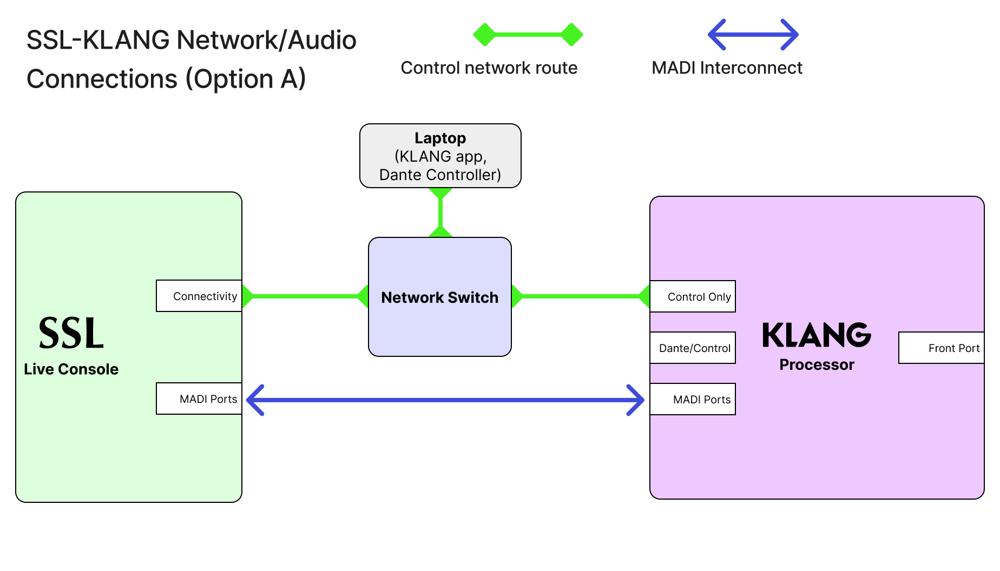
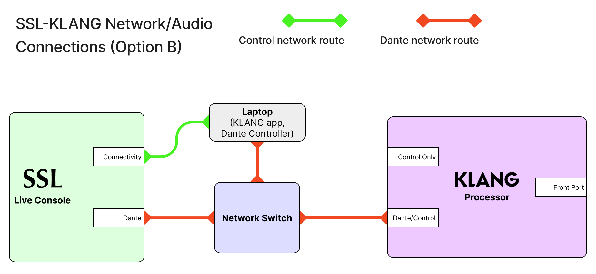
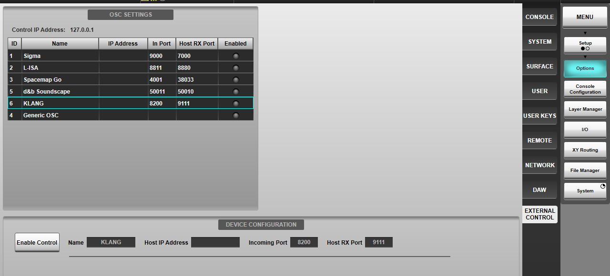
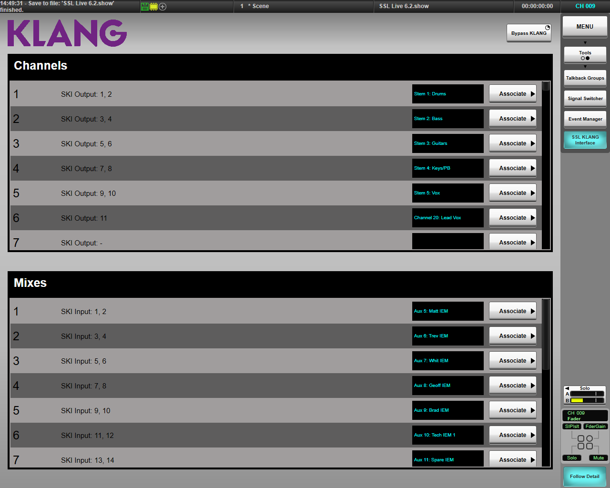
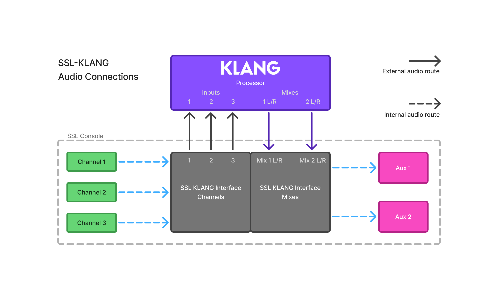
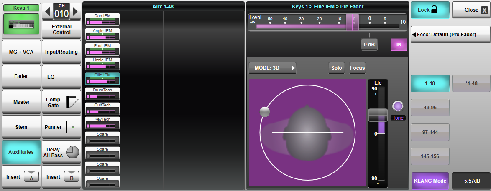

KLANG Integration
Console integration with KLANG immersive processors can be used to create immersive mixes for artists directly on the desk.
Instead of the console using its internal bus summing and panning to provide individualised mixes for artists, audio can be sent to a KLANG processor. Here, individual channels' contributions to a mix can be panned binaurally, creating an immersive and less congested mix for the performer.
Control of the mixes can also be given to the performers, through KLANG's app or :kontroller.
These mixes can then be brought back into the console's Auxes, to regain the functionality of the path processing and routing flexibility, before being sent out to their final destinations.
Note: A KLANG processor is required for use of this feature. Find them here.Several steps are needed before the integration will provide all the required functionality:
- The control connection needs to be established.
- Audio routes need to be made to the KLANG device.
- Channels and auxes need to be associated with their KLANG counterparts.
Control and Audio Transport Setup
There are multiple ways a KLANG system can be integrated with a console. Here are two examples:
Option A: Using MADI for audio transport
- Connect the console's connectivity port to a network switch.
- Connect the KLANG processor and a computer running the KLANG app to the same network switch.
- Connect the KLANG processor to the console using MADI.

Option B: Using a Dante network for Audio transport
- Connect the console's connectivity port to the computer running the KLANG app.
- Connect the console's Dante port to the Dante network, along with the computer running the KLANG app (this requires two separate network ports to be available on the computer).
- Ensure that the console's connectivity and Dante IP addresses are in separate subnets. The computer should not bridge these two networks: Dante Controller should use one port, and the KLANG app should use the other.
- Connect the KLANG processor to the Dante network via the Dante/Control port.

Console Setup
To configure the KLANG integration on the console, navigate to Setup > Options > External Control.
Select the KLANG row in the table.

Here, type in the control IP of the computer running the KLANG app.
Press the Enable Control button to establish the connection to the KLANG system.
Associating Inputs and Mixes
With the connection to the KLANG system set up, console channels/stems and auxillaries can now be associated to KLANG inputs and Mixes.
Navigate to Setup > Tools > SSL KLANG Interface.

This SSL-KLANG interface (SKI) acts as central place to view console-KLANG associations, but also as an intermediate audio router. This allows any I/O transport to be used to send audio to the KLANG system, and console channels and stems to feed KLANG inputs in any order.
In the SKI GUI, the Associate buttons can be used to choose a console channel/stem that will be associated with a particular KLANG input, or a stereo console aux that will be associated with a KLANG mix. This tells the console where to send the OSC data for each path, and handles the channel output routing.
The channel and mix lists also show which SKI inputs and outputs are used for each assocation. If troubleshooting is required, these numbers allow the tracing of the signal path.
Note: Only mono and stereo channel/stem paths can be associated with inputs, and only stereo auxes can be associated with mixes.Routing
When a channel is associated with a KLANG input, the channel's output will be automatically routed to the SKI. The same is true for an Aux and the Mix return path, which feeds the associated KLANG Mix into the Aux's crosspoint summing matrix.
To get from the console's SKI to the KLANG processor, use XY routing to patch the SKI 1-to-1 to the processor's inputs, and the processor's mix outputs back to the SKI returns. This can use any audio transport method. More information can be found about the XY router here.

This method of KLANG integration and routing allows multiple processors to be used that might require different audio transport. For example, mixes could be returned to the console via MADI, Dante, or even analogue connections, and as long as they're routed into the SKI's correct inputs, they will feed the aux mixes in exactly the same way.
Note: Incorrectly routing these inputs and outputs will result in incorrect panning data being sent for the inputs, and incorrect mixes returning to the console's aux buses.The Aux bus will now have the binaural KLANG mix on its' input, alongside any paths' signals sent directly to the bus internally. The output of this Aux can then be routed, as normal, to the artist's ears.
Note: In a special case where mixes are not used sequentially and gaps are needed, some repatching will be needed to ensure the associated aux receives the correct mix for the panning data its crosspoints are controlling. The SKI input numbers in the SKI mix list will show the correct inputs to patch to.Mixing with KLANG
When all the required channels and mixes have been associated, the operator can begin to use the KLANG summing and panning fatures.
In each channel path that has been associated with a KLANG input, a button for KLANG Mode will be available in the Aux send GUI in the Detail View. This will also only show when the selected crosspoint is feeding an Aux that has been associated with a KLANG mix.
Enabling KLANG Mode and switching to this GUI immediately puts the selected channel path into the KLANG mix. From this point on, the Gain and In parameters are linked with the KLANG system's Level and Mute parameters.

Note: VCA (V-Aux) control of KLANG-linked gain parameters is not supported.Several KLANG-specific parameters and functions are also available - azimuth, width, height, pan mode, tone, solo and focus.
These parameters are available via touch or on the channel tiles' encoders when Follow Detail is enabled.
Pan Mode
The options Stereo, 3D, i3D allow the panning to be set to a non-binaural Stereo plane, the default 3D binaural orbit, or the i3D orbit (This can maintain the panning positions when the listener turns their head, using head-tracking. Please see KLANG's documentation for instructions on using i3D mode).
Azimuth
The Azimuthis position of the object in the 3D orbit or the stereo plane. This is controlled by dragging the channel's node around the orbit which will change the signal's perceived position in KLANG's binaural mix.
Width
Only available for stereo channels, the Width parameter controls how much of the orbit or plane an object occupies. This is controlled by a pinch.
Height
A slider next to the orbit GUI controls the Height of the object. Only effective in 3D mode, this control allows you to move an objects' perceived position above or below eye level.
Tone
The Tone parameter controls the Personal Tone Filter, which adjusts the tonal balance between high and low frequency content, per input channel, per mix.
Solo
This acts as a Solo-In-Place in each KLANG mix, allowing a single input to be isolated.
Focus
This sends a command to the connected KLANG app to focus the panning view on the selected input/mix crosspoint.
Note: In KLANG Mode, the feed point selector is still visible in the Aux detail view. However, the feed point from the channel to KLANG will always follow the path's Direct Output selection, available on the path config page, rather than the Aux feed point.Other Functionality
Bypassing KLANG
During operation, if there are any issues with comms or audio transport to the KLANG processors, it's necessary to quickly switch back to internal aux bussing. There is a button in the SKI, labelled Bypass KLANG, that does exactly that. It's also available on a User Key, which can be assigned to a physical button on the tile, enabling quick access in case of emergency.
Internal crosspoint pans are not kept in sync with the the KLANG system. However, gain and mutes are. Bypassing KLANG will give a rough mix that matches in levels, but the panning will either be set as it was before KLANG mode was used for that crosspoint, or if Follow Pan is turned on for the selected aux, the crosspoint panning will have followed the Master pan of the selected path.
Automation
KLANG panning data will be stored in scenes and is recallable as normal. However, due to the complexity of the integration, the data is stored against the KLANG channels in the SKI, as opposed to the channel and stem paths themselves. This means that the parameters aren't protected by Path Global Recall Safe.
To recall protect the KLANG panning data, use the Recall Filters in the Automation page. The appropriate filter is located in the "KLANG Channel" row and the "OSC & Ext Pan" column.
Note: Using fades with KLANG parameters is not recommended.Useful Links
External ControlBus Routing
Index and Glossary